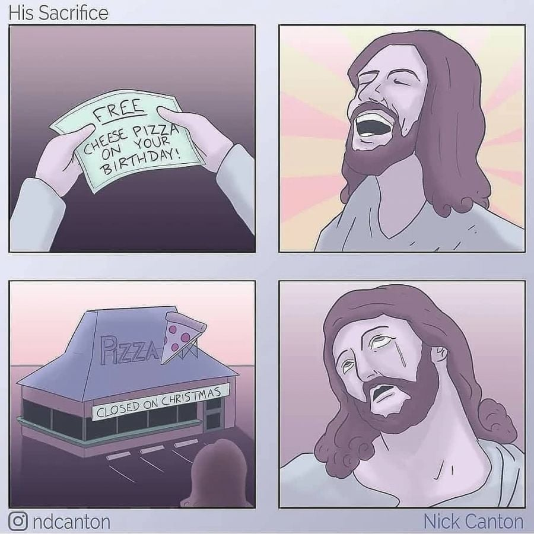

생일이면 치즈피자를 공짜로 드립니다.jpg
댓글
설당일 추석당일 개념이지
편의점 마트 식당 전부 다 쉬더라
연휴때 먹을거 안사놓으면 굶어야함
ㅇㅇ 몇 안 되게 여는 곳이 월남국수집들ㅋㅋ 대신 걔들은 설날에 닫음
빠리에서 대형마트가 일요일에 문 닫더라...
토요일 저녁되면 마트에 물건도 없음ㅋㅋㅋㅋ
ㅇㅇ 그래서 크리스마스를 안쇠는 유대교 신자들이 역시 크리스마스에도 장사하는 중국집에서 식사를 하는 전통이 있음 ㅋㅋㅋ
연말 연휴 섞어서 일주일 내내 쉰다던데
쟤네는 부활절 때도 쉬는 곳 많음
그의 권능으로 크리스마스는 이제 공휴일이 아니게 되었다
크리스마스는 예수의 생일이 아니다
생일혜택은 출생신고 기준으로만 제공하고있습니다 고갱님
베드로야 나를 모르느냐
나를 모르느냐 하지 마시고 주민등록증을 보여주세요 주무관들도 힘듭니다.
내 이름이 뭐더라
나사렛의 야소십니다
참 신기해 크리스마스 예수랑 관련 전혀 없던 날 이라고 하던데 ㅋㅋ 어떻게 이렇게까지 크리스찬의 중요한 날이 되었을까
본질이 아니라 믿음이라는 종교의 핵심 때문 아닐까
로마의 태양절인가 그랬을껄?
애초에 뭐 삼위일체 조차 예수가 직접 이야기한게 아니라 기독교 초창기 공의회에서 지들끼리 토론하다가 잠정합의한건데 ㅋㅋㅋㅋ
생일 2개 잖어
예수 탄생을 위해 단체 섹스하는 날
일본에서는 크리스마스가 평일인것도 듣고 충격받았는데
ㅋㅋㅋㅋㅋ
기독교국가들은 저때 다 쉬는가? 우리나라는 크리스마스가 대목이라 장사 빡세게하는데